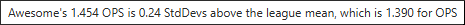
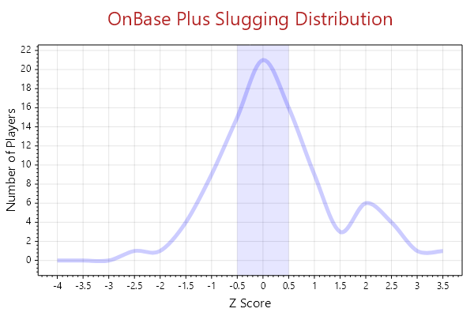
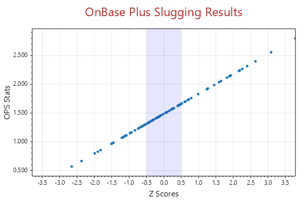
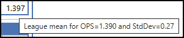
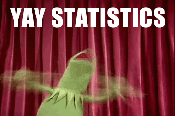

Both percentiles and ranking are ways of looking at data. A Percentile is the value for which a percentage of
the entire data is less than the value. For example, the 25th percentile is that value for which 25% of the data
items are below the value. The Ranking of a data item represents the relative standing of
that particular data item value within the entire data. For example, if the data item is greater than all others, it
has rank 1; if there are three items bigger than its value, it has rank 4.
A simple example related to the data in SBSS Data Viewer is a good way to start. Here are the batting averages for
26 players compiled from all the games they played in this league (for example, "Friday Competitive").
750, .600, .675, .667, .821, .487, .632, .722, .500, .645,
.600, .441, .824, .613, .483, .645, .600, .630, .556, .692, .778, .850, .706, .429, .750, .833
Looking at Player23 (whose average is .706), their rank is the number of players having an average higher
than theirs plus 1. In this example player23 has rank 9. Again, the rank is 9, because there are 8 averages greater
than player23's average.
Rankings are useful, but they don't really tell you much about the data as whole and how it compares to a
single data item (say Player23). What if the data had 65 items, or just 10 — the rank doesn't distinguish between
those two cases. Since we're only looking at 26 entries, just "eye-balling" gives you a good idea. The percentile is
a single number (not a percentage) that can allow you to compare players.
The solution to calculating both rank and percentile is to order the data (in ascending order) and then just do a
little counting. Here's the ordered data:
429, .441, .483, .487, .500, .556, .600, .600, .600, .613, .630, .632, .645, .645, .667, .675, .692,
.706, .722, .750, .750, .778, .821, .824, .833, .850
Now that the data is ordered to calculate both. Just count from the "right" until you get to Player23 and that
is their rank; count from the left until you to just before Player23 and divide that number by the size of the
entire data (26). That ratio is 65.38+ which tells us that Player23 is not only 8 from top, but nearly two
thirds of the players have an battering average less than Player23's average. We say that Player23 is in the
65th percentile.
If you've ever taken a standardized test (and if you haven't, you're lucky, and I salute you 👍🏻), the way it is
"graded" is to tell your percentile. It doesn't tell you your score, but it does tell that you how you did
in comparison to the rest of the test-takers.
In the Player Sheets page each player has both their rank and percentile (and soon z-scores) if
they've had enough to plate appearances in the league. Player23 looks something like this:
Please note this data was from an earlier period and is just an example. See below for more current
examples.
What is a Z-score?
A z-score measures the distance between a data point (in our case a stat value) and the mean (or μ) of those
stats for the league using standard deviations (StdDev or σ). Not much help you say,
because I've answered a question by creating two more.
The mean (μ) is just the average of
all the league data – the sum of the (weighted) values divided by the number of data values. Well not
quite, but we'll get back to that.
The standard deviation (σ) is a measure of how the data is distributed. It's another average really,
basically the average of all "squared distances" of each stat data item from the mean (μ).
Instead of dividing by the number of stat data values, we divide by the standard deviation (σ).
The result is a
single number that gives you a sense of where the data item lies in the entire list of data.
It's not a number
that represents AVG, SLG, OB or OPS, its just a statistic (a number that describes the data) similar to
rank and percentiles. Even though we use the word stat and statistics interchangeably when talking about
batting data, statistic in our context are things about the data, not the data itself. Usually context
makes the distinction clear, but we try and always use "stats" for data and
"statistics" for stuff (numbers or concepts) about the data.
The sign tells you whether the stat value is above or below the mean value typically for a league.
For example, a z-score of +1.12 indicates
that the data value falls 1.12 standard deviations above the mean, while a -1.12 signifies it is 1.12 standard
deviations (σs) below the mean (μ) of all the league data.
An Example — Awesome Player
"Awesome Player" is a fictional player, but the data is real (to protect the innocent). Here's Awesome's player
sheet as of 06/09/2024 (free beer to the real person whose values they are and anyone who guess correctly).
What follows is not an image, but a real interactive player sheet. You can expand and collapse the tables, and
better yet you can hover over the table header and the statistical values (Percentiles, Rankings and Z-scores) to
see explanations of the data via tool tips.
For example, hover over the OPS Z-Score for the Wednesday Community league (the second table), and the tool tip

is displayed. Try it! Hover all the column data of the AVG, SLG, OBP and OPS computed stats and view the tool
tips that are displayed.
But there's more. If you hover over the league computed stats, you'll see the μ (mean) and
σ (standard deviation) of each of the
stats. Read on to see how the z-scores are calculated from these statistics. But first ==>
Why Z-scores are Useful
Standardizing the raw stats by transforming the stats into z-scores give the following capabilities:
-
Understand where a player's stat value fits in a distribution of all the league values.
Graphing z-scores against stat values for all players is an interesting and useful way to see how the
stat data is distributed. You can expect graphs to be soon available as part of the SBSS Data Viewer!
-
Compare stats between different types.
Because the z-score is just a description of the stat's location among all (typically league) stats
you're analyzing, the numbers have the same meaning for the different stat types.
Admittedly AVG and SLG are strongly related to OBP and OPS, but looking at z-scores for
all these gives an indication of where the player's strength lies. For example, is it AVG, SLG, or
OBP that provide the major contribution to the OPS stat.
-
Identify outliers, that is, values which are very unusual.
Z-scores that are either greater than +3.5 or less than
-3.5 are extremely rare and often indicate that the number of plate appearance for the stat data is small.
Here a couple of graphs that show what you can do with z-scores. The first is the distribution of OPS z-scores
for all community leagues in the 2024 Spring season as of this writing (06/09/2024). It plots the
number of players whose values are between z-scores. You can see that most of the data is within a single
standard deviation centered on the mean.

The next graph plots the z-scores against the actual OPS data. Each dot on the plotted line shows a single
z-score on the horizontal axis and the OPS stat value on the vertical axis that produced that z-score.
Again this is the same data used to produce the previous graph.

Both of these graphs illustrate that most stat values are centered around the mean of the data (remember a
z-score of 0 arises from a stat value equal to the mean). And a conclusion is that z-scores greater than +0.5
are truly exceptional, at least for this OPS stat.
Statistics Deep Dive
We've been using the terms mean (μ) and standard deviation (σ) carefully, but a little loosely. In
this section those terms and symbols are defined in general and then in particular for our data, that is players'
stats. Will use the data from Wednesday Community league, the same league that "Awesome Player" played in
and displayed in the player sheet above.
| PA |
OPS |
| 25 | 1.348 |
| 25 | 1.930 |
| 24 | 1.404 |
| 23 | 1.509 |
| 22 | 1.454 |
| 22 | 1.255 |
| 22 | 1.445 |
| 21 | 1.428 |
| 21 | 1.715 |
| 19 | 1.008 |
| 19 | 1.421 |
| 19 | 1.465 |
| 19 | 1.678 |
| 17 | 1.172 |
| 17 | 0.971 |
| 16 | 1.625 |
| 16 | 1.240 |
| 15 | 1.282 |
| 12 | 0.955 |
| 11 | 1.427 |
| 10 | 1.900 |
| 8 | 1.000 |
| 7 | 1.142 |
| 7 | 1.657 |
| 5 | 1.200 |
| 5 | 1.600 |
| 5 | 0.933 |
| 4 | 1.500 |
| 4 | 1.000 |
| 4 | 1.000 |
| 4 | 0.833 |
| 4 | 0.833 |
Notice that there are 32 items, but only 24 players having more than 5 plate appearances. We need to use all
the data to calculate μ (mean) and σ (standard deviation – I think you're trained by
now, so symbols will be used), and for the 24 players their z-scores are recorded and displayer in
their player sheet.
First μ: It's just the sum of the OPS values, divided the number of stat items which in our case
is 32.
The formula is very simple (once you get used to the notation). It says sum all OPS data items (the
subscript "i" indicates adding each one in turn). And then divide by n, the number of stat data items. The
result is μ = 43.330/32 = 1.323.
The σ is not much harder. Remember it is just the value of the sum of differences of each
item from the
μ divided by the number of data items, n. Well that's a bit of problem because negative values would
cancel positive ones. We could use absolute values of differences but that can be inconvenient to
calculate. There's another to make sure all the differences are always positive — square the difference,
and then take that sum, which is called the sum of squares. Finally average that by dividing by n. This is
called the variance — it is basically the average of the "squared differences" (heard that before,
yes?). Here's the formula:
Just like the mean, except now we're averaging the sum of squared differences. Not exactly what we want,
but close. The sum of squared differences for our data is 2.805 and divided by 32, the variance is
0.088. In terms of "unit", the variance is "squares of difference from the mean", we want the average
of differences from the mean. And that is why the variance is viewed as σ squared. So to get
σ, we just take the square root:
The square root of 0.088 is 0.296.
So for a specific player's stat value (ops), we can look at the difference between ops and the μ and
if we divide by σ we get the measure of the distance between the two as "difference per σ".
Or just the number of σs. The z-score! Just to finish up, here's the formula:
Awesome's OPS value is 1.454, μ=1.323 and σ= 0.296, so Awesome's z-score for their
OPS value is +0.44 rounded to 2 decimal places. Bingo!
WAIT! THIS IS WRONG!!
The player sheet says the OPS z-score is +0.24! As Emily Litella (aka Gilda Radner) would say: "Never mind."
When you hover over the OPS score for the Wednesday Community league summary (last cell in the last row)
the tool tip displays

both the μ and σ so our calculation of the μ and σ are
different and that's the problem. You can use these values with the OPS value (top row, last cell)
to compute Awesome's z-score,
Turns out SBSS Data Viewer uses a slightly, but more accurate way
of calculating these statistics.
Here's the problem: Suppose you have just four players with OPS values of [4.000, 1.500, 1.600, 1.700]. If
you just go through the exercise we've just been through, you'd get
μ = 2.200 and σ = 1.042.
But now also suppose their plate appearances are [1, 30, 25, 23]. It makes no sense that the μ
is lower than all the values because a player who was only at bat once (albeit, they hit a home run)
makes the statistic meaningless. Admittedly this is not a real example, and our data is not likely to
have wildly different values, but still it's best to get it right.
One fix is throw out all values that are outliers — throwing away data is serious and bad
karma. Somehow you have to compute the statistics by weighting the data so this is not an issue,
and then report z-scores for non-outliers.
Okay, you're probably asking why didn't you say this at the beginning — it's much easier to
explain weighted statistics after you're exposed and comfortable with the standard case.
To compute the weighted mean, you have multiply each stat data value by the associated weight for that
stat value. In our case, we use the PA stats because the values are never 0 and are a good measure
of how active the player is. OPS values with larger PA make a greater contribution to
the sum of values than those that have smaller PA. The formula is quite similar to the standard non-weighted
version except that you multiple each OPS value by the PA for that entry. You can think about this as
replicating the OPS stat value PA times. If you view it that way, it is clear that you must divide by the sum
of the weights (PA values) rather than n, the number of OPS values. Here's the formula:
The sum of the weights (sum of PA values) is 452 (think of this as the new "n"). The sum of the products
of weight (PA) multiple by associated OPS is 628.192. So the weighted μ = is 1.390
(oh, that looks promising).
Again mimicking the formula for the unweighted case, we need only find the sum of squared differences
between the OPS values and weighted
μ to find
the variance because we already have the sum of the weights. Here is the formula for weighted variance:
The sum of the squared difference between OPS values and
divided by the sum of the weights is .072. Now taking the square root:
The standard deviation is 0.27 and now having all the data we can calculate the z-score using:
where x = 1.454 to get z-score = +0.24! In summary, the z-score calculation in SBSS Data Viewer is just
the stat value less the weighted μ divided by the weighted σ.
